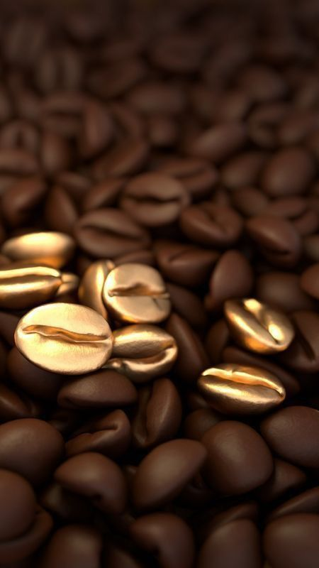

Todo comenzó en un pequeño rincón del mundo, donde la búsqueda por el café perfecto llevó a un descubrimiento inesperado. En un viaje por tierras lejanas, nos encontramos con un grupo de agricultores locales que habían perfeccionado una técnica ancestral para crear un café único: el Café Dorado .
Este café, con su distintivo brillo dorado y su sabor inigualable, no solo se destaca por su aspecto, sino también por el proceso detrás de su creación. Los granos de café son cuidadosamente seleccionados y sometidos a una fermentación especial, lo que les otorga ese tono dorado característico, además de suavizar su acidez y realzar sus notas dulces y afrutadas.

Nuestro Café: El Secreto del Café Dorado
El Café Dorado es el corazón de nuestra cafetería, una especialidad única que hemos perfeccionado para ofrecer una experiencia extraordinaria en cada taza. Lo que hace especial a nuestro café no es solo su color dorado, sino el proceso artesanal y la dedicación detrás de cada grano.
Seleccionamos cuidadosamente nuestros granos de café de pequeños productores que practican la agricultura sostenible y el comercio justo. Luego, a través de una fermentación especial y una técnica única de tueste, logramos un café suave y equilibrado, con notas dulces y un brillo dorado que lo distingue.
Este café no es solo una bebida, es una expresión de nuestra pasión por la calidad y el respeto por la tradición. Cada sorbo revela sabores únicos que cuentan una historia de dedicación, paciencia y amor por el buen café.